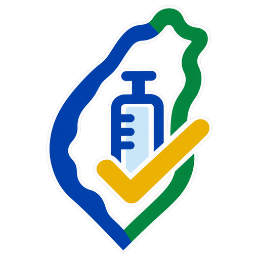

AI 改變的，是醫師操作電腦的方式
VaxCheck｜插卡、按一下，這位病患今天能公費打哪些疫苗
以前
翻疾管署計畫→健保雲端查病歷→切到 NIIS 查接種史→自己算間隔
現在
插卡→按一下→肺炎鏈球菌、流感、COVID-19 能不能打，一次看完
① 規則從哪來開發端・AI 用在這裡
疾病管制署公告
接種計畫・工作手冊・Q&A
致醫界通函・診斷碼參考表
Claude 轉譯
讀官方文件，整理成規則檔
每一條都附官方出處
自動測試＋醫師核准
臨床情境測試全過、醫師審核才發行
疫苗規則檔
規則即程式碼（Rules as Code）
- 誰是公費對象年齡、原住民、高風險疾病、重大傷病
- 過去打過什麼肺鏈 PCV13／15、PPV23、PCV20／21 共 11 種情境
- 要隔多久8 週／1 年／5 年；COVID-19 12 週
- 何時開打、打幾劑流感與 COVID-19 分兩階段開打
公告更新時只改規則，外掛每天自動檢查
② 門診現場每一位病患・插卡、按一下
健保雲端
診斷碼・用藥・檢驗
特殊給付
洗腎／長照等摘要
推論引擎
疫苗規則 × 病患資料，逐條推導
同樣的資料＋同樣的規則，結果一定相同
建議面板 示意畫面
肺炎鏈球菌可接種今天可打 PCV20／21
流感待確認確認 1 個條件就能打
COVID-19尚未開打顯示哪一天起可打
每張卡片寫出判定依據；病歷有證據的條件先幫你勾好，
只問會改變結果的那一題。
面板五組：可接種 待確認 尚未開打 已接種 不符合
VaxCheck 開放原始碼（Apache-2.0），其他醫院也能用github.com/Yuchunchen/VaxCheck